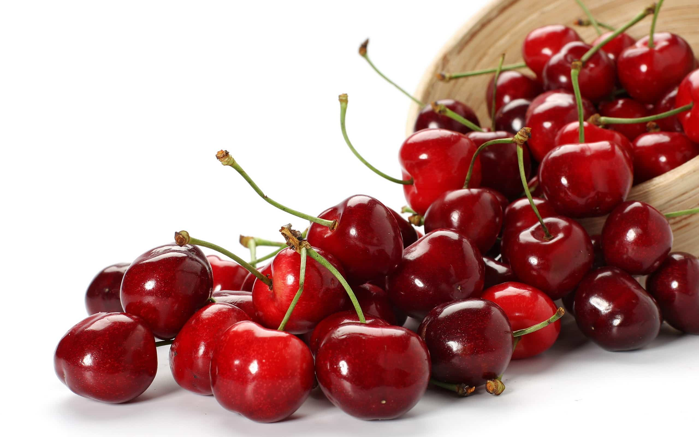

<article>
<div class="container5">
  <div class="blog1s">
    <p class="tieude1s"><a href="https://duongtt.herokuapp.com/shoppingcenter.html">Blog Fruits</a> </p>
    <hr/>
    <div class="noidung">
      <p style="font-family: sans-serif ;color: black ; text-decoration: underline; font-size: 15px;">HIỂU VỀ TRÁI CÂY</p>
      <h1 style="font-size: 30px">Lợi ích không thể bỏ qua của trái cây Cherry</h1><br/>
      
      <p>Ngoài hương vị thơm ngon, giòn rụm, kích thích vị giác, trái cherry còn có rất nhiều lợi ích cho
        sức khỏe. Cùng Hoa Biển tìm hiểu nhé…!</p><br/>
      <h3 class="tieude2">1. Tăng năng lượng cho cơ thể</h3><br/>
      <p>Tiêu thụ cherry sẽ giúp tăng năng lượng trong cơ thể bạn một cách tự nhiên. Phần lớn lượng
        calo trong trái này có được từ các loại đường tự nhiên, giúp thúc đẩy tâm trạng vui vẻ và
        tăng năng lượng trong cơ thể bạn. Nếu cảm thấy mệt mỏi, hãy ăn một vài quả cherry tươi bạn
        sẽ cảm thấy hưng phấn hơn nhiều.</p><br/>
      <h3 class="tieude2">2. Giúp ngủ ngon hơn</h3><br/>
      <p>Hãy ăn cherry thường xuyên để cải thiện tình trạng mất ngủ. Cherry chứa melatonin làm cho
        giấc ngủ sâu và ngon hơn. Đừng vội uống thuốc an thần vì nó có thể gây ra một tác dụng phụ
        khiến bạn khó chịu. Thay vào đó hãy cố gắng ăn vài trái cherry mỗi ngày sẽ đem lại cho bạn
        giấc ngủ chất lượng hơn nhiều.</p><br/>
      <h3 class="tieude2">3. Tốt cho mắt</h3><br/>
      <p>Hàm lượng vitamin A trong cherry nhiều hơn khoảng 20 lần so với dâu tây hay việt quất. Một
        lý do tuyệt vời để ăn cherry mỗi ngày là chúng rất tốt cho đôi mắt của bạn. Cherry chứa
        nhiều vitamin A và một phần của vitamin này là beta carotene giúp thúc đẩy tầm nhìn tốt
        và giữ cho đôi mắt của bạn khỏe mạnh. Retinol là một phần của vitamin A còn giúp làn da
        mịn màng, đàn hồi tốt.</p><br/>
      <h3 class="tieude2">4. Ngăn ngừa ung thư</h3><br/>
      <p>Tiêu thụ cherry thường xuyên có thể giúp chống lại một số loại ung thư. Cherry chứa chất
        chống oxy hóa mạnh mẽ làm giảm nguy cơ ung thư và chậm quá trình lão hóa. Hãy bổ sung
        thêm loại quả này vào chế độ ăn để có được sức khỏe dẻo dai.</p><br/>
      <h3 class="tieude2">5. Cải thiện tiêu hóa</h3><br/>
      <p>Do hàm lượng chất xơ cao, cherry giúp cải thiện hệ thống tiêu hóa và giảm nồng độ cholesterol.
        Bạn không cần phải ăn quá nhiều cherry, chỉ ít thôi là đủ. Hàm lượng chất xơ trong trái cây
        này chiếm khoảng 1/4 tổng nhu cầu xơ trong ngày của bạn.</p><br/>
      <h3 class="tieude2">6. Chữa đau và giảm sưng</h3><br/>
      <p>Cherry là một nguồn cung cấp dồi dào anthocyanins. Chất này được chứng minh có thể giúp giảm
        đau, sưng đối với các bệnh mãn tính, bao gồm cả gút và viêm khớp. Nếu bạn bị đau khớp, hãy cố
        gắng ăn một ít cherry mỗi ngày thay vì uống thuốc. Loại trái này cũng được chứng minh giúp
        giảm đau bụng kinh.</p><br/>
      <h3 class="tieude2">7. Ngăn ngừa chuột rút (vọp bẻ)</h3><br/>
      <p>Chuối có nhiều kali hơn cherry chín, nhưng không phải ai cũng thích chuối. Nếu không ưa chuối,
        bạn vẫn dễ dàng có được lượng kali cần thiết khi ăn cherry. Chất này giúp giảm và ngăn ngừa
        chuột rút, vì vậy đây là một ý tưởng tốt nếu bạn ăn cherry trước và sau khi tập thể dục. Bạn
        cũng có thể uống nước ép cherry nếu muốn.</p><br/>
      <h3 class="tieude2">8. Cải thiện chức năng não</h3><br/>
      <p>Nếu cảm thấy thỉnh thoảng hay quên, cherry có thể giúp đỡ bạn tránh tình trạng bị mất trí nhớ
        không liên quan đến tuổi tác. Cherry được biết đến là “thực phẩm bổ não” vì nó có chứa nhiều
        chất chống oxy hóa mạnh anthocyanins. Đây là một chất tuyệt vời dành cho não bộ. Mỗi bữa ăn
        có một ít cherry sẽ giúp cải thiện sức mạnh não bộ của bạn.</p><br/>
      <h3 class="tieude2">9. Tốt cho tim</h3><br/>
      <p>Các loại thực phẩm tốt cho tim luôn luôn là một món ăn tuyệt vời. Cherry được chứng minh làm
        giảm nguy cơ bệnh tim và rất tốt cho sức khỏe tổng thể.</p><br/>
      <h3 class="tieude2">10. Có tính kháng viêm cao</h3><br/>
      <p>Một trong những lợi ích sức khỏe quan trọng nhất của việc ăn quả cherry là đặc tính kháng
        viêm mạnh mẽ. Đây là tin vui cho những bệnh nhân viêm khớp và các vận động viên, những người
        dễ bị đau sau khi tập luyện. Nếu bạn đang gặp phải các vấn đề viêm, hãy uống nước trái cây
        cherry pha loãng 3 lần mỗi ngày nhé.</p><br/><br/>
      
      <h3><span style="float: right">Theo Womanitely</span></h3>
    </div>
  </div>
</div>


</article>
